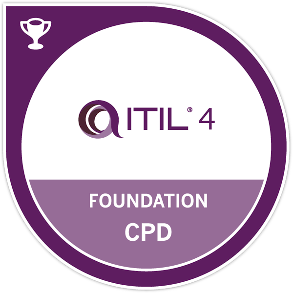
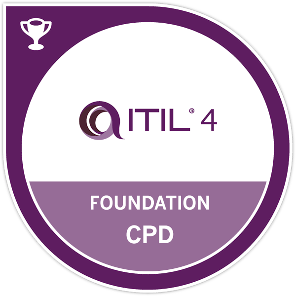

About Me
I may be new to coding, but not to technology. I have Microsoft and Azure cloud computing certifications along with ITIL 4 Foundation training. It soon became clear to me that to really break into the field of computing I needed to learn some languages, It was then I came across the Netmatters Scion Scheme which I started at the end of May 2022.
I have always been an astute and keen learner and have thoroughly enjoyed the training and application of skills learnt on the Scion Scheme, It have also found it a privilege to collaborate with like-minded developers on the Scheme.
Always keeping an open mind, I approach my work and learning holistically and use the AGILE model in projects and development. I love knowing the intricacies of how things work, then using that knowledge to push the envelope on what is possible or fixing complicated problems in the most effective and simplest way.
I am looking forward to progressing beyond HTML/CSS/SASS and learning some back end development, possibly migrating into cloud native software development.

 
